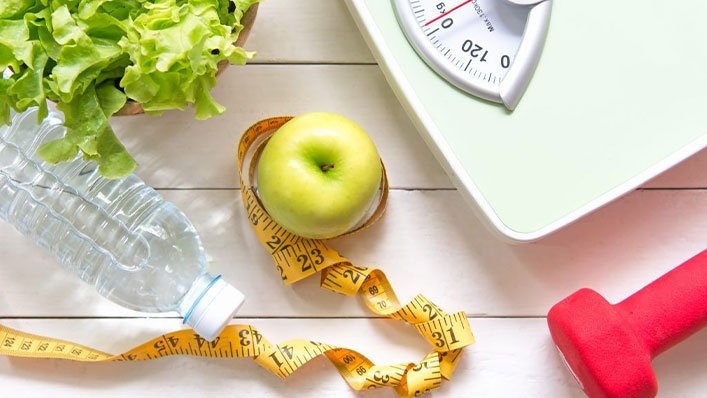

Weight Loss & Weight Management
Whether you've decided to lose weight for yourself or your doctor has told you you need to, embarking on a weight loss
journey can be difficult. With a never ending stream of weight loss diets available, finding a route to a healthy weight can
seem overwhelming.
You may have tried several different diets before you have found us and you might feel like nothing works for you.
Whether you want to lose 5kg or 50kg, we can support you to lose weight in a healthy, sustainable way that accounts for
your individual needs, circumstances, likes and dislikes while working on improving your relationship with food.